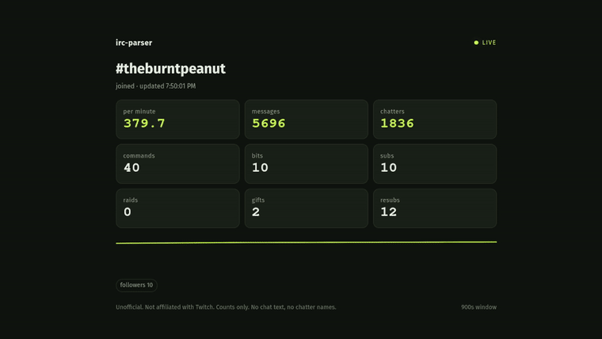

A self-hosted, read-only Twitch IRC client. One C++ process opens a native TLS socket to irc.chat.twitch.tv, keeps a short in-memory window of counts, and serves them on a local API. Chat text is not stored. The public demo is smaller than the private API, and the client stays inside Twitch's documented limits.
C++ · Linux · native sockets · TLS